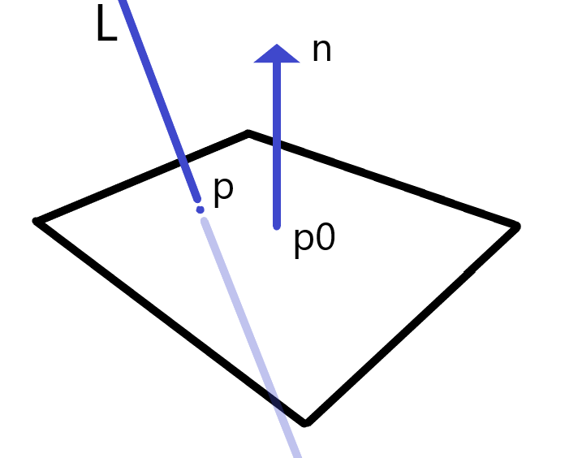

JJJ's Planar shadow derivation.
Intersection between ray and plane.
To explane about shadow projections, I will start from very basics.
Basically, the dot product of two perpendicular vectors are 0,
because result from dot product is length of projection.
So if there are origin of plane p0 and point on plane p and normal vector n of plane exist,
It should looks like this, we already know that a dot product of two perpendicular vectors are 0,
n·(P - P0) = 0
We can evaluate this shared point between plane and ray using parametric equation of ray and plane.
The equation of plane using point-normal form will looks like this after we insert parametric equation of ray for intersection point to the equation.
n·(P0 + t(P -L)) + d = 0, where t > 0It is also 0 since P0 and P is point on plane.
n·t(P -L) = -n·P0 -d t = -n·P0 -d/(P-L)nNow we know how to get intersection point between ray and plane, it is time to cast some shadow, I will start with easy one.
Case 1: directional light source.

For directional shadow, we can use calculated t value with parametric equation of ray. s = p - (n·p+d / n·L)L
Since directional light have same direction everywhere, I can just use L as global light vector.
To get transform matrix, we have to convert above equation into matrix,
and it should looks like this :
| n·L - Lxnx | -Lxny | -Lxnz | -Lxd |
| -Lynx | n·L - Lyny | -Lynz | -Lyd |
| -Lznx | -Lzny | n·L - Lznz | -Lzd |
| 0 | 0 | 0 | n·L |
We already know that it have to be divided by n·L, so each rows should have P(n·L),
for instance, first row offer P(n·L) at the very first of that row, and rest of that row offers -(n·P +d)L
This matrix will project shadow from directional light source for any arbitrary plane.
Case 2: point light source.
For point light source, it is little different, first, we have to calculate light vector for our vertices since it is not a directional light anymore.
s = p - (n·p+d / n·L)Lso now this equation looks like this :
s = p - (n·P+d / n·(P-L))(P-L)and our matrix should be changed a little bit.
| n·L +d - nxLx | -nyLx | -nzLx | -Lxd |
| -nxLy | n·L +d - nyLy | -nzLy | -Lyd |
| -nxLz | -nyLz | n·L +d - nzLz | -Lzd |
| -nx | -ny | -nz | n·L |
Major change in this matrix is denominator. It is now negative number, but it does not matter since we can negate the numerator.
Also, we can put +d for each rows to make n·(P-L), since we already have nl from previous matrix and all we need is n·P.
And according to the equation of plane, n·P = d. also, we can negate this so we can get -n·P.
By doing so, we can easily evaluate the shadow from point light source that cast on any arbitrary plane.